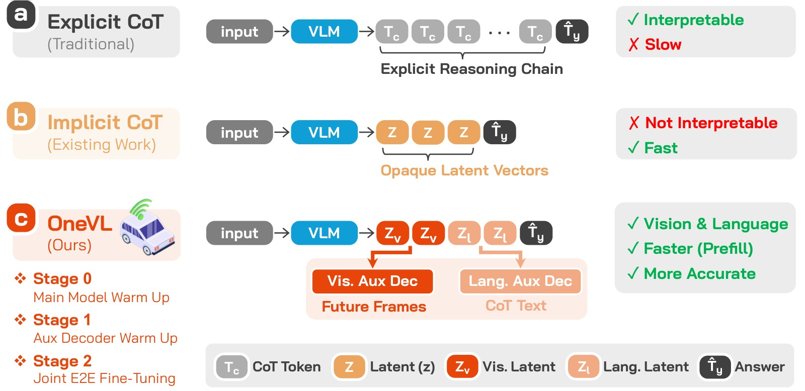
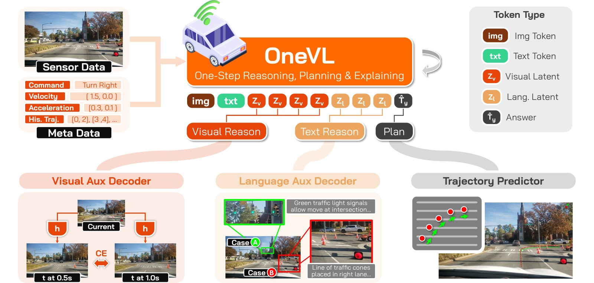
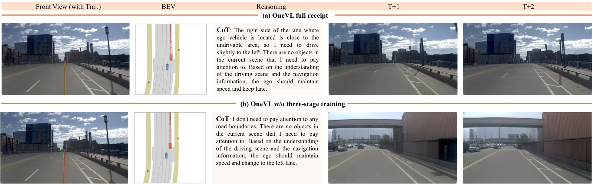

OneVL: One-Step Latent Reasoning and Planning with Vision-Language Explanations
论文信息 - 作者：Xiaomi Embodied Intelligence Team（卢竞辉、关嘉怡、黄志坚 等核心贡献者 19 人 + 贡献者 24 人） - 通讯作者：龙晨（Long Chen） - 投稿方向：arXiv 预印本，投稿中（under review） - arXiv ID：2604.18486 - 代码：https://github.com/xiaomi-research/OneVL - 模型权重：https://huggingface.co/collections/xiaomi-research/onevl-models - 项目页：https://Xiaomi-Embodied-Intelligence.github.io/OneVL - 基座模型：Qwen3-VL-4B-Instruct（4B 参数）
一、核心问题
自动驾驶 VLA（Vision-Language-Action）模型的一个重要进展是在输出轨迹前先生成 Chain-of-Thought（CoT）推理文本，显著提升了预测质量。然而，标准自回归（AR）CoT 需要在生成每个推理 token 之后才能产生轨迹，导致推理延迟与 CoT 长度成正比——在安全关键的实时场景中不可接受。
一类称为 Latent CoT（隐式思维链） 的工作试图将推理压缩为连续隐向量而非离散 token，从而消除逐 token 生成的开销。但已有的隐式 CoT 方法（COCONUT、CODI、SIM-CoT）在自动驾驶 VLA 任务上全部失败——不仅不如显式 CoT，甚至不如无推理的纯答案预测（AR Answer）。
本文的核心洞察是：压缩语言描述不等于压缩场景动力学。 自然语言对驾驶场景的描述本质上是抽象的——它编码的是语义标签而非物理因果结构。因此，纯粹的语言隐式表征压缩的是"世界的符号抽象"，而非"世界本身的因果动力学"。

图1：三种 Chain-of-Thought 范式对比与四个 benchmark 的综合表现。
子图 (a) 显式 CoT： 模型自回归地生成完整的离散推理 token 序列，再生成轨迹答案。优点是推理过程可读、可审计；缺点是延迟随推理链长度线性增长，例如 NAVSIM 上 AR CoT+Answer 的延迟为 6.58s。
子图 (b) 隐式 CoT（COCONUT/CODI/SIM-CoT）： 将推理压缩为少量连续的隐向量 Z，理论上更快。但在自动驾驶任务上全面崩溃——COCONUT 在 NAVSIM 上的 PDM-score 仅 84.84，远低于 AR Answer 的 87.47。原因在于这些方法源自纯文本推理，缺少视觉世界模型监督，隐空间坍塌为仅编码语言层面抽象，丢失了几何精度。
子图 (c) OneVL（本文）： 引入两类隐 token——视觉隐 token（Z_v，红色）和语言隐 token（Z_l，橙色）。训练时通过双辅助解码器（视觉→未来帧预测、语言→CoT 文本重建）对隐表征施加物理因果约束。推理时抛弃全部辅助解码器，所有隐 token 通过 Prefill 并行注入 prompt，速度与纯答案预测持平（NAVSIM 上 4.46s vs 4.49s），但准确率超过显式 CoT（PDM-score 88.84 vs 88.29）。
底部柱状图（准确率-效率 Pareto）： 纵轴为 PDM-score（NAVSIM）或 ADE（ROADWork），横轴为推理延迟。OneVL 落在绿色阴影标注的最优区域（最低延迟、最佳指标）。所有先前的隐式 CoT 方法（COCONUT、CODI、SIM-CoT）均落于 AR Answer 下方——这是一个关键发现：已有隐式 CoT 方法在驾驶任务上全部失效。OneVL 是唯一同时超越 AR Answer 和 AR CoT+Answer 的隐式 CoT 方法。
二、核心思路 / 方法
2.1 总体设计
OneVL 在 Qwen3-VL-4B-Instruct 基础上增加：
- 6 个隐式 token（4 个视觉隐 token + 2 个语言隐 token），使用原始词表 token 实现（无需新增特殊 token）
- 两个辅助解码器（仅训练时使用）：
- 语言辅助解码器 $\mathcal{D}_l$：从语言隐 token 重建 CoT 推理文本
- 视觉辅助解码器 $\mathcal{D}_v$：从视觉隐 token 预测未来帧的视觉 token（世界模型监督）

图2：OneVL 完整架构图。
输入层（上部）： 前视摄像头图像 + 结构化文本 prompt（ego 状态、导航指令、历史轨迹）送入 VLM 主干（Qwen3-VL ViT + MLP Aligner + LLM）。
隐 Token 序列（中部 VLM 输出 hidden states 下方）： 从 LLM 的输出 hidden states 中提取五个部分——图像 token（T_v）、文本 token（T_l）、视觉隐 token（Z_v，4 个）、语言隐 token（Z_l，2 个）、轨迹答案 token（T_y）。关键设计：视觉隐 token 放在语言隐 token 之前，两者均位于 assistant 回复中 trajectory answer 之前的位置。
左分支——视觉辅助解码器 D_v： 接收视觉隐 token 的 hidden states H_v 与 ViT patch embedding V（经 MLP 投影），自回归预测 t+0.5s 和 t+1.0s 两帧未来图像的视觉 token 序列。视觉 token 使用 Emu3.5 IBQ（Index Backpropagation Quantization）tokenizer，codebook 大小 131,072。该解码器充当世界模型，强制视觉隐 token 编码场景的因果动力学（agent 运动、道路几何演变、新危险的出现）。
右分支——语言辅助解码器 D_l： 接收语言隐 token 的 hidden states H_l 与 ViT patch embedding V（经 MLP 投影到解码器嵌入空间），自回归重建 CoT 推理文本。条件化于 ViT 特征使解码器在生成 CoT 时可参考当前视觉上下文。
推理时（虚线红叉）： 两个辅助解码器均被丢弃。所有隐 token（视觉 + 语言）以 Prefill 方式并行注入 prompt（现代 Transformer 在 prefill 阶段对所有 token 并行计算），随后仅自回归生成轨迹 token。延迟等同于纯答案预测。
2.2 隐 Token 设计
两类隐 token 使用原始词表 token 实现（而非新增特殊 token），因为实验发现添加专用特殊 token（如 <|latent-vis|>）会降低性能：
| Token 类型 | 数量 | 实现 | 位置 |
|---|---|---|---|
| 视觉隐 token | C_v = 4 | 用已有词表 token 表示（实现为约 35 个 token） | <\|start-latent-vis\|> <\|latent-vis\|>×4 <\|end-latent-vis\|> |
| 语言隐 token | C_t = 2 | 用已有词表 token 表示（实现为约 20 个 token） | <\|start-latent\|> <\|latent\|>×2 <\|end-latent\|> |
| 轨迹答案 | - | 标准自回归输出 | <answer> [[x,y], ...] </answer> |
2.3 辅助解码器详细设计
语言辅助解码器 $\mathcal{D}_l$：
输入构造：
其中 $\mathcal{V} \in \mathbb{R}^{N_v \times d}$ 是 ViT patch embedding，$\mathcal{H}_l \in \mathbb{R}^{C_t \times d}$ 是语言隐 token 的 hidden states，$W_l$ 是 MLP 投影层。训练目标为标准的自回归交叉熵损失 $\mathcal{L}_l$，预测 ground-truth CoT 推理文本。
视觉辅助解码器 $\mathcal{D}_v$：
输入构造：
其中 $\mathcal{H}_v \in \mathbb{R}^{C_v \times d}$ 是视觉隐 token 的 hidden states。训练目标为预测未来两帧（t+0.5s, t+1.0s）的视觉 token 序列 $\mathcal{T}_{y_v}$ 的交叉熵损失 $\mathcal{L}_v$。
视觉 tokenizer 采用 Emu3.5 IBQ，codebook 131,072，图像最大分辨率 512×512。Qwen3-VL-4B 原始词表被扩展 131,072 个视觉 token ID。视觉 token 序列在训练前离线构建（用 IBQ tokenizer 对 ground-truth 未来帧编码），训练时不需要额外前向传播。
核心动机：为什么是"世界模型"辅助？ 自动驾驶本质上是时空预测任务。未来帧的视觉 token——即驾驶场景在近未来时刻的视觉表现——是学习视觉隐表征的自然目标。该任务作为严格的泛化测试：预测 unseen 的场景配置需要一个鲁棒的因果模型，而非模式记忆。结合视觉和语言解码器，框架在物理动力学和语义意图两个维度上监督隐 token，施加多模态约束以捕获环境的共享因果结构。
2.4 联合训练目标
总损失为三个组件的加权和：
其中 $\mathcal{L}_c$ 为主模型交叉熵损失（轨迹答案 + 隐 token），$\lambda_l = 1.0$，$\lambda_v = 0.1$。$\lambda_v$ 较低是因为视觉 token 重建是更困难的任务，较小的权重防止其支配训练信号。
2.5 Prefill 推理机制
推理时 prompt 构造为：
[System, User query, <|start-latent-vis|>, <|latent-vis|>×4, <|end-latent-vis|>,
<|start-latent|>, <|latent|>×2, <|end-latent|>]
所有隐 token 在 prefill 阶段 并行处理（现代 Transformer 对 prefill 序列做一次并行前向传播），模型随后仅自回归生成轨迹 token。由于 prefill 阶段已经包含大量图像 patch token，额外几个隐 token 的开销可忽略。
可选地，训练后可通过辅助解码器生成语言解释和视觉解释（例如用于人类审核或安全审计）。
三、三阶段训练管线
联合训练主 VLM、语言辅助解码器和视觉辅助解码器面临独特挑战：三者有根本不同的学习目标和不同的初始化状态。OneVL 通过渐进式三阶段管线解决这一问题。
| 超参数 | 预训练 | Stage 0 | Stage 1 | Stage 2 |
|---|---|---|---|---|
| 步数/Epoch | 13,040 steps | 2 epochs | 1 epoch | 5 epochs |
| 全局 Batch | 256 | 64 | 64 | 64 |
| 学习率 | 1×10⁻⁴ | 4×10⁻⁵ | 1×10⁻⁴ | 1×10⁻⁴ |
| LR 调度 | Cosine | Cosine | Cosine | Cosine |
| 优化器 | AdamW | AdamW | AdamW | AdamW |
| 精度 | BF16 | BF16 | BF16 | BF16 |
| 并行 | ZeRO-2 | ZeRO-2 | ZeRO-2 | ZeRO-2 |
| 可训练 | 视觉辅助解码器 | ViT + LLM + Aligner | 语言 & 视觉辅助解码器 | 全部 |
| 冻结 | — | — | 主 VLM | — |
| λ_l | — | — | 1.0 | 1.0 |
| λ_v | 1.0 | — | 0.1 | 0.1 |
预训练：视觉辅助解码器自监督预训练
在集成到完整管线前，视觉辅助解码器先独立预训练为无条件未来帧生成器。仅接收当前帧 ViT embedding $\mathcal{V}$（无隐 token），预测 t+0.5s 和 t+1.0s 的视觉 token：
预训练后，解码器已学会从当前场景预测合理的未来帧，具备了隐式的"世界模型"能力。当后续连接主模型时，视觉隐 token 作为额外条件信号加入——解码器从"无条件下一帧生成"转变为"以动作为条件的世界模型 rollout"。
Stage 0：主模型热身
训练主 VLM（全参数：ViT + LLM + Aligner）在轨迹预测任务上，隐 token 嵌入每个训练样本的 assistant 回复中。模型学会：
- 预测准确的轨迹（CE 损失监督）
- 发展有意义的隐表征（通过注意力机制，轨迹 token 可以 attention 到隐 token 位置，建立辅助解码器后续利用的信息路由路径）
Stage 1：辅助解码器热身
冻结主模型，仅训练两个辅助解码器。主模型产生的隐表征稳定后，解码器在一个一致的语义分布上优化，学习从固定隐特征到 CoT 文本和未来帧视觉 token 的映射。
Stage 2：端到端联合微调
解冻所有组件，用总损失 $\mathcal{L}$ 联合微调。梯度从 $\mathcal{L}_l$ 和 $\mathcal{L}_v$ 回流到主模型，直接塑造隐表征以同时服务轨迹预测、语言解释和视觉预测三个目标。
为什么三阶段训练必不可少？ 消融实验显示直接端到端联合训练导致灾难性失败——PDM-score 从 88.84 暴跌至 67.13。原因有二：(1) 初始化时有严重的"梯度冲击"，梯度 norm 达到 378.22，而三阶段策略维持在 0.28；(2) 端到端联合训练导致灾难性任务干扰，主模型同时优化冲突目标，最终轨迹预测 loss 更高（0.186 vs 0.136）。
四、实验与结果
4.1 实验设置
数据集（4 个 benchmark）：
| Benchmark | 来源 | 特点 | 评估指标 |
|---|---|---|---|
| NAVSIM | nuPlan 驾驶日志 | 大规模非反应式规划评估 | PDM-score（安全 + 舒适 + 进度） |
| ROADWork | 自建 | 施工区导航：临时标志、非标车道、锥桶/障碍物 | ADE / FDE（像素） |
| Impromptu | 8 个开放数据集蒸馏 | 非结构化 corner-case：无清晰边界道路、临时交通规则、非常规障碍物 | ADE / FDE（米）+ L2@1s-4s |
| Alpamayo-R1 | CoC 标注 | 决策锚定的推理链 + 复杂驾驶行为 | ADE / FDE（米） |
CoT 标注构建： NAVSIM 使用 AdaThinkDrive 发布的 CoT 标注；ROADWork 使用自研标注管线（施工区特有：危险识别、非标车道解释、速度/间隙推理）；Impromptu 从原始 Q&A 对构建；Alpamayo-R1 使用作者发布的 checkpoint 复现 CoT 标注。
基线方法：
- AR 方法：AR Answer（无推理）、AR CoT+Answer（显式 CoT）
- 隐式 CoT 方法：COCONUT、CODI、SIM-CoT（均为 Qwen3-VL-4B 基础）
- 已有 SOTA：AdaThinkDrive (8B)、LaST-VLA (8B)、Impromptu VLA (3B)、Cosmos-Reason (10B)、YNet
4.2 主要结果
NAVSIM（PDM-score ↑，延迟 ↓）：
| 方法 | 模型大小 | PDM-score ↑ | 延迟 (s) ↓ | 可解释性 |
|---|---|---|---|---|
| AdaThinkDrive | 8B | 86.20 | — | 语言 |
| LaST-VLA | 8B | 87.30 | — | — |
| AR Answer | 4B | 87.47 | 4.49 | — |
| AR CoT+Answer | 4B | 88.29 | 6.58 | 语言 |
| COCONUT | 4B | 84.84 | 5.93 | — |
| CODI | 4B | 83.92 | 8.62 | — |
| SIM-CoT | 4B | 84.21 | 10.86 | 语言 |
| OneVL | 4B | 88.84 | 4.46 | 视觉 + 语言 |
OneVL 以 4B 参数超越所有 8B 模型和所有 AR/隐式基线。与 AR Answer 相比延迟几乎相同（4.46s vs 4.49s），但 PDM-score 高 1.37。这是首个隐式 CoT 方法超越显式 AR CoT（88.84 vs 88.29）。
ROADWork（ADE/FDE ↓，像素）：
| 方法 | ADE ↓ | FDE ↓ | 延迟 (s) ↓ |
|---|---|---|---|
| YNet | 22.68 | 80.78 | — |
| AR Answer | 15.98 | 40.29 | 4.74 |
| AR CoT+Answer | 13.18 | 29.98 | 10.74 |
| COCONUT | 15.44 | 38.60 | 6.06 |
| CODI | 16.45 | 44.28 | 6.73 |
| SIM-CoT | 16.49 | 44.32 | 6.19 |
| OneVL | 12.49 | 28.80 | 4.71 |
OneVL 比 AR CoT+Answer 快 2.3×（4.71s vs 10.74s），且 ADE/FDE 更低。施工区场景对推理精度要求极高——COCONUT/CODI/SIM-CoT 甚至不如 AR Answer，再次验证纯语言隐式 CoT 在复杂驾驶场景的失败。
Impromptu（ADE/FDE ↓，米）：
| 方法 | ADE ↓ | FDE ↓ | 延迟 (s) ↓ |
|---|---|---|---|
| Impromptu VLA | 1.60 | 4.28 | 6.10 |
| AR Answer | 1.46 | 4.03 | 4.24 |
| AR CoT+Answer | 1.42 | 3.96 | 6.84 |
| COCONUT | 1.49 | 4.07 | 5.27 |
| CODI | 1.86 | 5.18 | 5.24 |
| SIM-CoT | 2.43 | 6.10 | 5.09 |
| OneVL | 1.34 | 3.70 | 4.02 |
Impromptu 聚焦非结构化 corner-case（无清晰边界道路、临时交通规则等），这类场景正是 CoT 推理最有价值的场景。SIM-CoT 在此类场景上表现最差（ADE 2.43），而 OneVL 建立新的 SOTA。
Alpamayo-R1（ADE/FDE ↓，米）：
| 方法 | ADE ↓ | FDE ↓ | 延迟 (s) ↓ |
|---|---|---|---|
| Cosmos-Reason (10B) | 2.86 | 7.42 | — |
| AR Answer | 3.27 | 9.59 | 3.06 |
| AR CoT+Answer | 2.99 | 8.54 | 3.51 |
| COCONUT | 3.29 | 9.48 | 3.76 |
| CODI | 3.22 | 9.25 | 3.85 |
| SIM-CoT | 3.40 | 9.85 | 3.78 |
| OneVL | 2.62 | 7.53 | 3.23 |
OneVL 在 ADE 上最优（2.62），FDE 略低于 Cosmos-Reason（7.53 vs 7.42），后者使用了 RL 进一步增强能力。注意 Alpamayo-R1 上所有隐式 CoT 方法均未崩溃（不同于其他 benchmark），但 COCONUT/CODI/SIM-CoT 仍不如 AR Answer。
4.3 解释质量评估
文本 CoT 质量（NAVSIM 500 测试样本）：
| 方法 | Meta Action Acc. ↑ | STS Score ↑ | LLM Judge ↑ | 平均 ↑ | 延迟 (s) ↓ |
|---|---|---|---|---|---|
| AR CoT+Answer | 73.20 | 79.75 | 81.86 | 78.27 | 6.58 |
| SIM-CoT | 67.20 | 76.25 | 78.73 | 74.06 | 10.86 |
| OneVL (lang. aux.) | 71.00 | 78.26 | 79.13 | 76.13 | 4.46 |
三种评估指标：
- Meta Action Accuracy： 提取 CoT 末尾的高层驾驶决策（如"keep lane, maintain speed"），与 ground-truth 做精确字符串匹配。直接影响安全性——决策错误是最危险的。
- STS Score： 使用 BGE-reranker-v2-m3 交叉编码器计算语义文本相似度。交叉编码器对关键局部矛盾高度敏感（如"slowly" vs "fastly"），经全局 min-max 归一化到 [0, 1]。
- LLM-as-Judge： 使用 Gemini-3.1-flash-lite-preview 作为自动评分器，在感知准确性、运动状态预测、决策正确性、语言流畅性四个维度评分，考虑视觉 grounding。
OneVL 的语言辅助解码器恢复了 AR CoT 约 97% 的解释质量（76.13 vs 78.27），但延迟仅为 AR CoT 的 68%（4.46s vs 6.58s），并在所有指标上显著超过 SIM-CoT。
4.4 消融实验
| 模型变体 | 语言辅助解码器 | 视觉辅助解码器 | 分阶段训练 | PDM-score ↑ |
|---|---|---|---|---|
| OneVL w/o 视觉解码器 | ✓ | — | ✓ | 87.97 |
| OneVL w/o 语言解码器 | — | ✓ | ✓ | 88.53 |
| OneVL w/o 分阶段训练 | ✓ | ✓ | — | 67.13 |
| OneVL（完整） | ✓ | ✓ | ✓ | 88.84 |
关键发现：
- 视觉辅助解码器贡献 +0.87 PDM-score（88.84 - 87.97），远超语言解码器的 +0.31。反映了视觉世界模型监督的本质价值：轨迹预测是空间预测任务，未来帧重建提供的是与几何推理天然对齐的监督信号。
- 分阶段训练是必需的——跳过它导致 21.71 分的灾难性下降。直接端到端训练在初始化时发生梯度爆炸（grad norm 378.22 vs 三阶段的 0.28），且最终轨迹预测损失更高（0.186 vs 0.136）。

图3：完整训练配方 vs 无分阶段训练——视觉辅助解码器输出对比。
子图 (a) 完整三阶段训练： 上半部分展示使用完整训练配方的结果。视觉辅助解码器从同一输入图像解码出的 t+1 和 t+2 未来帧保持场景一致性——道路布局、车辆位置、车道线结构与输入图像在空间上连贯，证明视觉隐 token 确实编码了有意义的场景动力学。这构成了一个"视觉思维链"：模型不仅能告诉你它打算做什么，还能展示它预期看到的场景演变。
子图 (b) 无分阶段训练（直接端到端）： 下半部分展示跳过三阶段 curriculum 的结果。解码出的"未来帧"与输入图像完全无关——表现为抽象的、模式化的伪影，而非合理的场景演变。这说明没有渐进式训练，视觉辅助解码器过拟合——走捷径记忆训练数据模式，而非学习泛化的场景动力学。此时语言 CoT 推理也是错误的（论文报告了类似退化）。最关键的是，这种失效的监督信号不仅无用，反而引入噪声，使整体性能从 88.84 暴跌至 67.13。
为什么这张图重要： 它直接可视化了"压缩的质量决定智能的质量"这一中心论点。三阶段训练确保隐 token 瓶颈编码的是可泛化的场景动力学（因果结构），而非记忆的捷径（表面统计规律）。
4.5 部署优化：MLP Head 变体
| 变体 | PDM-score ↑ | 延迟 (s) ↓ | 推理频率 |
|---|---|---|---|
| OneVL (MLP) | 86.83 | 0.24 | 4.16 Hz |
| OneVL (AR) | 88.84 | 4.46 | — |
在最后一个隐 token 的 hidden state 上附加轻量 MLP head，单次前向传播即可输出轨迹（无需自回归解码）。延迟仅 0.24s（4.16 Hz），达到车载实时部署的频率要求（通常为几 Hz），同时保持有竞争力的性能（86.83 仍超过 LaST-VLA 的 87.30 仅差 0.47，但参数少一半）。
五、关键洞察与技术亮点
5.1 为什么隐式推理超越了显式 CoT？
一个自然的问题是：为什么 OneVL 用更少的 token 表达推理（6 个隐 token vs 数百个 CoT token），性能反而更好（88.84 vs 88.29）？论文提出两个机制：
-
压缩红利（Compression Benefit）： 紧凑的隐 token 强制模型将最关键的推理内容蒸馏到小型表征瓶颈中，过滤掉无关或冗余内容。这正是信息瓶颈原理（Information Bottleneck）的预期效果——更紧的压缩丢弃噪声，仅保留对输出有预测性的因果特征。相比之下，冗长的自由形式 CoT 链中，切题的推理可能引入噪声。
-
世界模型接地（World Model Grounding）： 视觉辅助解码器明确要求视觉隐 token 编码时空场景动力学（未来帧内容），这是与轨迹预测直接相关的信号。显式语言 CoT 没有类似的接地机制——它符号性地描述世界，因果几何保持隐式。
5.2 为什么视觉监督比语言监督贡献更大？
视觉解码器贡献 +0.87，语言解码器仅 +0.31。这一非对称性反映了：
- 自动驾驶轨迹预测本质上是空间预测任务，未来帧重建（预测 0.5-1.0 秒后的场景）提供的监督信号与轨迹预测的几何性质天然对齐。
- 未来帧预测是世界模型目标——为最小化 unseen 场景配置上的重建损失，视觉隐 token 必须编码场景的因果动力学（agent 运动、道路几何），而非仅当前外观。
- 语言 CoT 标注描述的是符号化、抽象的推理过程——对语义接地有价值，但离物理动力学隔了一层。
5.3 已有隐式 CoT 方法的失败分析
COCONUT、CODI、SIM-CoT 在自动驾驶上集体失败的根本原因：
-
缺少视觉世界模型监督： 没有视觉辅助解码器强制隐 token 编码时空场景内容，隐表征压缩的是语言层面的抽象，丢失了轨迹预测所需的几何精度。OneVL w/o 视觉解码器（87.97）仍低于完整模型（88.84），仅移除世界模型监督就导致 -0.87 的下降。
-
缺少分阶段训练： 已有方法通常在优化开始时就让隐 token 与轨迹预测处于未对齐状态。消融实验分离了该效应——即使没有视觉解码器但有三阶段训练（87.97），仍远高于无分阶段训练的崩溃水平（67.13）和所有先前隐式 CoT 基线。
5.4 压缩驱动泛化
OneVL 的核心哲学：压缩驱动泛化。 模型被强制将丰富的多模态输入压缩为紧凑的隐 token 时，必须保留真正的因果结构——而这正是泛化所依赖的。语言辅助解码器和视觉辅助解码器作为双重验证：如果紧凑的隐 token 能同时解码为连贯的语言推理和合理的未来帧，模型必然学到了可迁移的场景动力学表征，而非记忆输入-输出映射。
六、代码实现解读
OneVL 的推理代码约 820 行（infer_onevl.py），评估代码约 740 行（eval_results.py），视觉 tokenizer 约 120 行。整体架构清晰——训练后的 checkpoint 将所有权重（主模型 + 辅助解码器 + 投影层）存储在同一个 safetensors 文件中，推理脚本按前缀提取各子模块权重。
6.1 整体推理流程
┌─────────────────────────────────┐
│ infer_onevl.py │
│ main() 入口 │
└──────────────┬──────────────────┘
│
┌──────────────────────┼──────────────────────┐
│ │ │
▼ ▼ ▼
┌────────────────┐ ┌──────────────────┐ ┌──────────────────┐
│ 加载主模型 │ │ 构建辅助解码器 │ │ 加载测试数据集 │
│ Qwen3VLForCon- │ │ (可选,按前缀提取) │ │ JSON / JSONL │
│ ditionalGene- │ │ - text aux dec │ │ resolve 图片路径 │
│ ration.from_ │ │ - visual aux dec │ └──────────────────┘
│ pretrained() │ │ - latent proj │
└────────────────┘ └──────────────────┘
│ │
└──────────┬───────────┘
│
▼
┌─────────────────────┐
│ 逐样本推理循环 │
│ for idx, item ... │
└──────────┬──────────┘
│
┌──────────────┼──────────────┐
│ │ │
▼ ▼ ▼
┌──────────┐ ┌────────────┐ ┌──────────────┐
│构造 prompt│ │可选: forward│ │生成轨迹答案 │
│+ 隐 token │ │ pass 获取 │ │model.generate│
│+ 图像加载 │ │ hidden │ │测量延迟 │
│+ 编码 │ │ states → │ │ │
└──────────┘ │ 辅助解码 │ └──────────────┘
└────────────┘
6.2 隐 Token 位置检测（代码核心机制）
由于 OneVL 使用原始词表 token 实现隐 token（而非新增特殊 token），推理时需要从 tokenized 序列中精确检测隐 token 的位置。检测逻辑在 infer_onevl.py:76-196：
输入序列 ID 扫描
│
▼
┌───────────────────────────────────┐
│ _get_latent_pattern_ids() │
│ 获取关键 token ID: │
│ - 'latent' keyword │
│ - '|' pipe │
│ - '-vis' suffix │
└───────────────┬───────────────────┘
│
▼
┌───────────────────────────────────┐
│ _find_latent_keyword_positions() │
│ 扫描序列中 |latent| 模式 │
│ 条件: ids[i-1]==pipe AND │
│ ids[i]==latent_keyword │
│ AND ids[i+1]==pipe │
└───────────────┬───────────────────┘
│
▼
┌───────────────────────────────────────┐
│ _find_visual_latent_keyword_positions│
│ 扫描序列中 |latent-vis 模式 │
│ 条件: ids[i-1]==pipe AND │
│ ids[i]==latent_keyword │
│ AND ids[i+1]==vis_suffix │
└───────────────┬───────────────────────┘
│
▼
┌───────────────────────────────────┐
│ _expand_keyword_positions_ │
│ with_stop() │
│ 从关键词位置向两端扩展， │
│ 包含所有标记组件token │
│ (start/end delimiter等) │
└───────────────┬───────────────────┘
│
▼
返回 (text_positions, visual_positions)
6.3 辅助解码器推理流程
主模型 forward pass
(output_hidden_states=True)
│
▼
┌─────────────────────┐
│ 提取 hidden_states │
│ [-1] (最后一层) │
└──────────┬──────────┘
│
┌─────────────┴─────────────┐
│ │
▼ ▼
┌──────────────┐ ┌──────────────┐
│ 语言隐 token │ │ 视觉隐 token │
│ positions │ │ positions │
└──────┬───────┘ └──────┬───────┘
│ │
▼ ▼
┌──────────────┐ ┌──────────────┐
│ latent_embeds│ │ latent_embeds│
│ = last_hidden│ │ = last_hidden│
│ [b, pos, :] │ │ [b, pos, :] │
└──────┬───────┘ └──────┬───────┘
│ │
▼ ▼
┌──────────────┐ ┌──────────────┐
│latent_proj │ │visual_latent │
│MLP 投影 │ │proj MLP 投影 │
└──────┬───────┘ └──────┬───────┘
│ │
▼ ▼
┌──────────────┐ ┌──────────────┐
│ 可选: 拼接 │ │ 可选: 拼接 │
│ ViT embeds │ │ ViT embeds │
│ (视觉条件) │ │ (视觉条件) │
└──────┬───────┘ └──────┬───────┘
│ │
▼ ▼
┌──────────────┐ ┌──────────────┐
│ 语言辅助 │ │ 视觉辅助 │
│ 解码器 D_l │ │ 解码器 D_v │
│ 自回归生成 │ │ 自回归生成 │
│ CoT 文本 │ │ 视觉 token │
└──────────────┘ └──────────────┘
6.4 关键代码映射
| 论文概念 | 代码位置 | 说明 |
|---|---|---|
| 隐 token 位置检测 | infer_onevl.py:76-196 |
compute_inference_latent_positions() |
| 语言辅助解码器构建 | infer_onevl.py:213-255 |
build_aux_decoder_from_checkpoint()，前缀 _latent_cot_aux_decoder. |
| 视觉辅助解码器构建 | infer_onevl.py:213-255 |
同上，前缀 _latent_cot_visual_aux_decoder. |
| 隐投影层构建 | infer_onevl.py:258-273 |
build_projection_from_checkpoint()，前缀 _latent_cot_latent_proj. |
| 语言解释解码 | infer_onevl.py:330-393 |
decode_latent_with_aux()，自回归解码 CoT 文本 |
| 视觉解释解码 | infer_onevl.py:396-465 |
decode_latent_with_visual_aux()，自回归解码视觉 token |
| ViT embedding 提取 | infer_onevl.py:316-324 |
extract_visual_embeds()，按 image_token_id 选择 |
| Prefill 推理（隐 token 注入 prompt） | infer_onevl.py:573-588 |
assistant_prefix 构造，latent_block 字符串 |
| 答案生成（隐 token 在 prefill，仅生成轨迹） | infer_onevl.py:752-761 |
model.generate(**inputs, ...) 标准自回归生成 |
| 轨迹解析 | eval_results.py:40 |
_PAIR_RE 正则提取 [x, y] 坐标对 |
| ROADWork 评估 | eval_results.py:142-222 |
cmd_roadwork()，像素级 0-1000 归一化反算 |
| Impromptu 评估 | eval_results.py:306-500 |
cmd_impromptu()，BEV 坐标系，L2@1s-4s |
| AR1 评估 | eval_results.py:609-710 |
cmd_ar1()，ego-frame meters |
6.5 视觉 Tokenizer 设计
论文使用 Emu3.5 IBQ (Index Backpropagation Quantization) tokenizer（vq_decoder/ibq.py），架构为 VQ-VAE 变体：
输入图像 x (512×512)
│
▼
┌───────────────────┐
│ Encoder │ CNN 编码器
│ (下采样 + 残差块) │
└────────┬──────────┘
│
▼
┌───────────────────┐
│ quant_conv │ 1×1 Conv: z_channels → embed_dim
└────────┬──────────┘
│
▼
┌───────────────────────────────┐
│ IndexPropagationQuantize │
│ - Codebook: 131,072 codes │
│ - Straight-through Gumbel │
│ softmax + argmax │
│ - 量化损失: β=0.25 │
│ - 可选熵损失 (codebook 利用) │
└───────────────┬───────────────┘
│
▼
离散 token indices
(每个 token 对应 codebook 中一个条目)
│
▼ (解码路径)
┌───────────────────┐
│ post_quant_conv │ 1×1 Conv: embed_dim → z_channels
└────────┬──────────┘
│
▼
┌───────────────────┐
│ Decoder │ CNN 解码器
│ (上采样 + 残差块) │
└────────┬──────────┘
│
▼
重建图像
快速 tokenizer（visual_tokenizer/tokenization_qwen3vl_visual.py）通过映射技巧高效加载 131K 视觉 token 词表：将 <|visual token XXXXXX|> 替换为 NUL 字节占位符，在 Rust 后端编码后交换占位符 ID 为真实视觉 token ID，避免 Aho-Corasick 缓慢构建。
6.6 数据格式
训练/推理数据格式基于对话结构：
[{
"messages": [
{"role": "user", "content": "<image>Front-view image... Command: MOVE FORWARD..."},
{"role": "assistant", "content": "latent tokens + <answer>[[x,y],...]</answer>"}
],
"images": ["path/to/frame.jpg"],
"GT": "[[1.0, 0.0], [2.5, 0.1], ...]"
}]
Assistant 回复中的隐 token 格式：
<|start-latent-vis|><|latent-vis|>×4<|end-latent-vis|>
<|start-latent|><|latent|>×2<|end-latent|>
<answer>[[x,y], ...]</answer>
七、局限性
- 训练内存开销大： 训练时需要约 3× 内存（三个完整 4B 模型实例同时驻留），依赖 DeepSpeed ZeRO-2 缓解但仍对基础设施有较高要求。
- 隐 token 数量未系统调优： C_v=4、C_t=2 为经验选择，隐 token 数量与表征容量之间的 trade-off 留待未来系统研究。
- 轨迹仍为自回归生成： Prefill 消除了隐 CoT 开销，但轨迹 token 本身仍逐 token 生成。MLP head 变体降低了延迟但牺牲了性能。并行或非自回归轨迹解码是通往真正实时部署的关键方向。
- 单摄像头输入： 当前仅使用前视摄像头。扩展到多摄像头可支持 360° 未来场景预测和更全面的因果场景理解。
八、关键概念速查
| 概念 | 说明 |
|---|---|
| VLA | Vision-Language-Action：同时处理视觉、语言和动作输出的多模态模型 |
| CoT | Chain-of-Thought：在给出最终答案前逐步推理的生成策略 |
| Latent CoT | 将推理过程压缩为连续隐向量而非生成离散 token |
| 信息瓶颈原理 | 更紧的压缩丢弃噪声，保留对输出有预测性的因果特征 |
| IBQ | Index Backpropagation Quantization：通过直通估计 + Gumbel softmax 的 VQ 变体 |
| PDM-score | Predictive Driver Model score：NAVSIM 的复合指标，综合安全、舒适和进度 |
| ADE / FDE | Average/Final Displacement Error：轨迹预测的像素/米级误差 |
| Prefill Inference | 将隐 token 放入 prompt prefill 阶段并行处理，消除 AR 生成开销 |
| 世界模型辅助 | 通过预测未来帧迫使隐表征编码场景因果动力学 |
| ZeRO-2 | DeepSpeed 的分布式训练优化策略，分片优化器状态 + 梯度 |
| ViT | Vision Transformer：将图像编码为 patch embedding 序列 |
| MLP Aligner | 将 ViT 输出投影到 LLM 嵌入空间的中间层 |
| λ_v = 0.1 | 视觉损失权重远低于语言损失（视觉 token 重建更难，防止支配训练） |